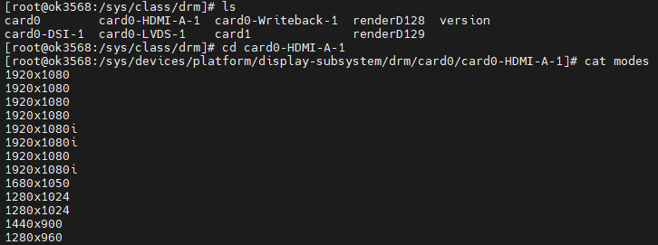

OK3568 4.19.206 Buildroot Fixed Resolution Output
Document classification: □ Top secret □ Secret □ Internal information ■ Open
Copyright
The copyright of this manual belongs to Baoding Folinx Embedded Technology Co., Ltd. Without the written permission of our company, no organizations or individuals have the right to copy, distribute, or reproduce any part of this manual in any form, and violators will be held legally responsible.
Forlinx adheres to copyrights of all graphics and texts used in all publications in original or license-free forms.
The drivers and utilities used for the components are subject to the copyrights of the respective manufacturers. The license conditions of the respective manufacturer are to be adhered to. Related license expenses for the operating system and applications should be calculated/declared separately by the related party or its representatives.
Fixed Resolution Output
Fixed Resolution Output for Weston Desktop
1. Enter ls /sys/class/drm to check display devices.

2. View supported resolutions.

Modify the file /etc/xdg/weston/weston.ini:
[output]
name=HDMI-A-1 //Corresponding to the above list, remove card0-
mode=1280x960 //A valid resolution supported by the screen
scale=1 //Zoom factor, which should be an integer multiple
Forced HDMI Resolution Output Without Reading EDID
Modification Method
Enable HDMI screen output in U-Boot.
Modify Ok3568-linux-source/kernel/drivers/gpu/drm/bridge/synopsys/dw-hdmi.c:
Add edid = NULL.
Adjust parameters in the dw_hdmi_default_modes array.
If the required resolution parameters are not in dw_hdmi_default_modes, search OK3568-linux-source/kernel/drivers/gpu/drm/drm_edid.c for corresponding parameters and add them to the array in the correct format.
Modification Steps
1. Source location: kernel/drivers/gpu/drm/bridge/synopsys/dw-hdmi.c;
static int dw_hdmi_connector_get_modes(struct drm_connector *connector)
{
struct dw_hdmi *hdmi = container_of(connector, struct dw_hdmi,
connector);
--------Omit some codes-------
edid = drm_get_edid(connector, hdmi->ddc);
//Do not read current edid
edid = NULL;
if (edid) {
dev_dbg(hdmi->dev, "got edid: width[%d] x height[%d]\n",
edid->width_cm, edid->height_cm);
--------Omit some codes-------
kfree(edid);
} else {
hdmi->support_hdmi = true;
...
//Keep only the desired resolution in the dw_hdmi_default_modes.
static const struct drm_display_mode dw_hdmi_default_modes[] = {
/* 108 - 1920x1080@60Hz */
{ DRM_MODE("1920x1080", DRM_MODE_TYPE_DRIVER, 148500, 1920, 2008,
2052, 2200, 0, 1080, 1084, 1089, 1125, 0,
DRM_MODE_FLAG_NHSYNC | DRM_MODE_FLAG_NVSYNC),
.vrefresh = 60, .picture_aspect_ratio = HDMI_PICTURE_ASPECT_64_27, },
+/*
4 - 1280x720@60Hz 16:9
{ DRM_MODE("1280x720", DRM_MODE_TYPE_DRIVER, 74250, 1280, 1390,
1430, 1650, 0, 720, 725, 730, 750, 0,
DRM_MODE_FLAG_PHSYNC | DRM_MODE_FLAG_PVSYNC),
.vrefresh = 60, .picture_aspect_ratio = HDMI_PICTURE_ASPECT_16_9, },
16 - 1920x1080@60Hz 16:9
--------Omit some codes-------
2 - 720x480@60Hz 4:3
{ DRM_MODE("720x480", DRM_MODE_TYPE_DRIVER, 27000, 720, 736,
798, 858, 0, 480, 489, 495, 525, 0,
DRM_MODE_FLAG_NHSYNC | DRM_MODE_FLAG_NVSYNC),
.vrefresh = 60, .picture_aspect_ratio = HDMI_PICTURE_ASPECT_4_3, },
+*/
};
2. Compile separately with the./build. sh kernel to generate the/kernel/boot. img file;
3. Flash the boot.img file separately.
Note: Some users have reported color discrepancies or screen compatibility issues (known as “picky screen” phenomenon) after forcing the HDMI resolution via the method described above. However, the majority of users can still use it normally.